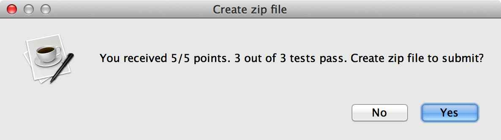

Using a SpecChecker to validate your code
Most of the time when you write code, it has to interact with libraries that already exist or with code that other people are writing. For this to work, everybody's code has to behave according to its documented specifications.In particular, some portion of your grade on each assignment will come from automated tests that we run. In order for the tests to run, your code has to conform precisely to the specification we provide. For most assignments, we will give you a tool called a SpecChecker. The main purpose of the SpecChecker is to help you verify that your code is written according to an assignment's specifications. (For example, among many other things, it will check whether the public method names and the types of the parameters are correct.)
In some cases, the SpecChecker will run some functional tests of your code and/or create a zip file for you to submit to Blackboard.
Assignments vs. Miniassignments
This course has two kinds of homework: regular assignments, and miniassignments .- For miniassignments, 100% of the points come from the SpecChecker's automated tests.
- For the regular assignments, 30% to 40% of the points come from automated tests and the remainder from reading and evaluating your code.
Running a SpecChecker
Running a SpecChecker is easy, but there are some detailed steps that have to be followed. (Most of these steps won't make a whole lot of sense at first, but we should be able to understand them by the end of the course!)Each SpecChecker is a small Java library called a "jar" file. You download it, import it into your Eclipse project, and run it. The step-by-step instructions are found at http://www.cs.iastate.edu/~cs227/specchecker.pdf .
You can find a SpecChecker for your Greeter class at http://www.cs.iastate.edu/~cs227/labs/lab1/speccheck_lab1.jar. Follow the instructions in the pdf above to import the SpecChecker into your project and run it. This SpecChecker is similar to the ones we will use for the miniassignments, that is, it will run a simple functional test and will optionally create a zip file for you to submit. When you see the message

click Yes, and select a directory on your network drive in which to save the zip file. The SpecChecker will create a zip file called SUBMIT_THIS_lab1.zip.